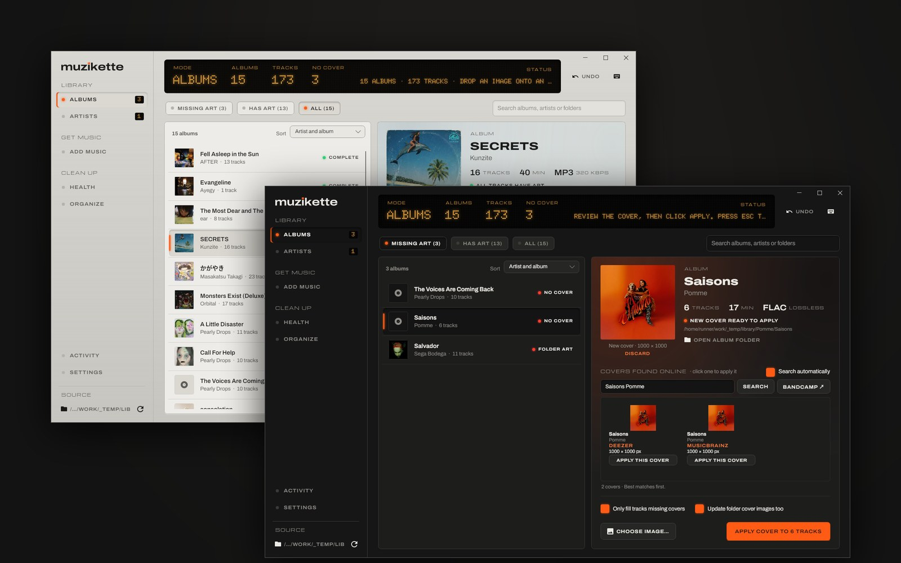
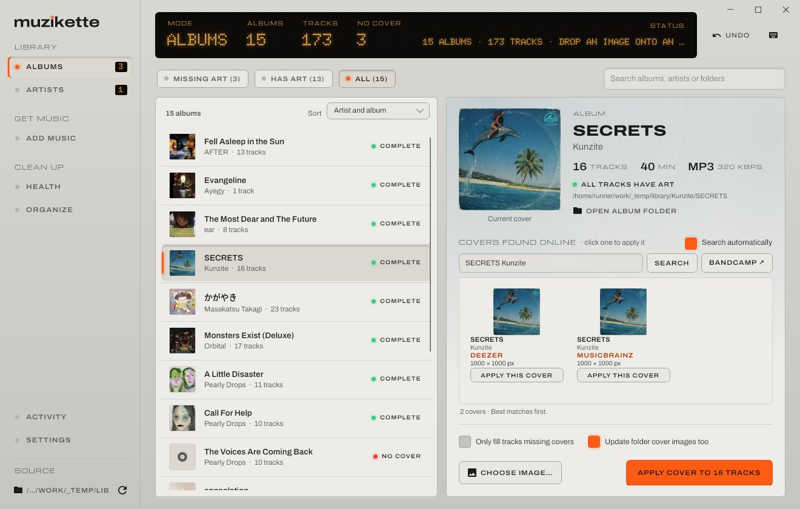
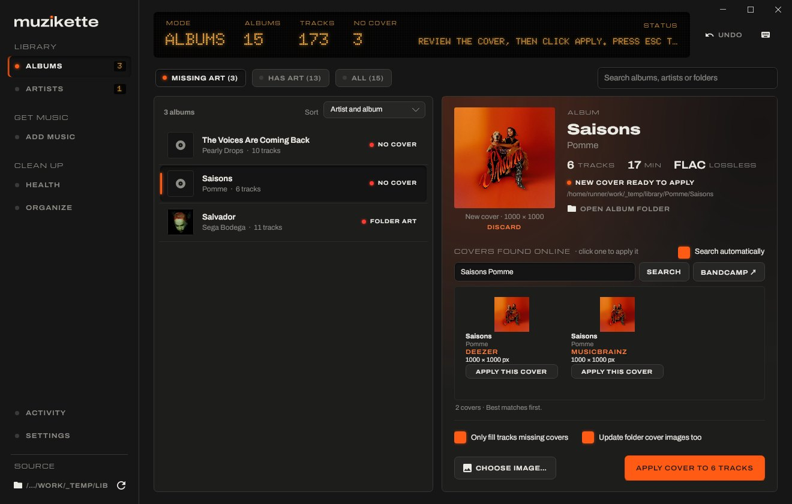
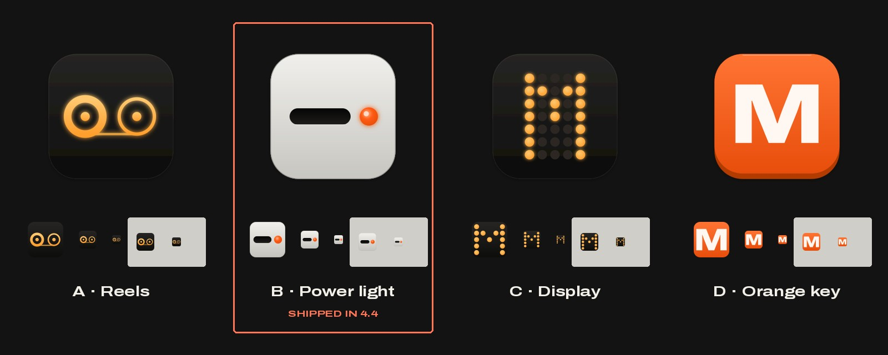
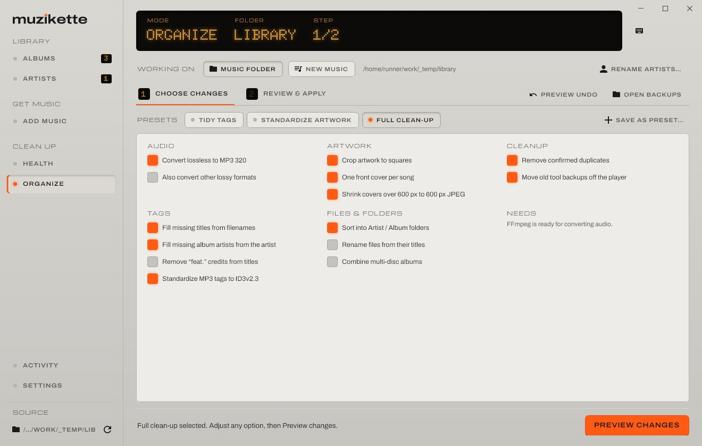

A desktop app that keeps a music library in order: covers, artist credits, tags, formats, duplicates and
folders. I built it with an AI coding agent and used it to find out how far careful direction can take
AI-assisted development. The answer so far is 45 releases in 7 weeks, on Windows, macOS and Linux.
Role
Product owner Direction, design, testing
Core stack
C#, .NET 10 NativeAOT Avalonia UI
Built with
Claude Code GitHub Actions on 3 OSes
Current scope
45 releases, 3 platforms 1,304 test assertions

Muzikette in its Silver and Black finishes
01 / Origin
It started with my own music folder.
My library had albums with no cover art, songs credited to whichever guest happened to be on them, and a
mix of formats from years of collecting. I wanted one tool that fixed all of it without ever putting a
file at risk.
The first release, Album Art Tool, did one thing: find albums missing covers and apply new ones, with
backups and Undo. Using it on my own library kept showing me the next problem.
Version 2 added artist cleanup, MP3 conversion, duplicate removal and folder organization. Version 3
rebuilt the app as a native, ahead-of-time compiled program with a GPU-rendered interface. Version 4 gave
it a name and an identity.
What the app had to guarantee
Nothing changes without a preview of exactly what will happen.
Originals are backed up before a file is touched, and every change can be undone.
Large libraries stay fast, with parallel scans and a cache between launches.
It installs and updates like a finished product, with no administrator prompt.
02 / Working with AI
I set the bar. The agent had to prove it met it.
Muzikette is AI-assisted from the first commit. Claude Code wrote the implementation. I kept the parts of
the job that decide whether software is any good: what to build, how it should look and feel, what counts
as done, and what is ready to ship.
01
Describe outcomes
My requests read like product notes: make it run on Linux, make the title bar feel like part of the
app, plus a screenshot of an error I hit. The agent turned each one into a plan, code and tests, and
I judged the result on my own library.
02
Verify everything
Every change runs the full suite on Windows, macOS and Linux: real codec round trips, audio integrity
checks and headless checks of every page. CI also captures screenshots of the running app, so the
interface is reviewed visually instead of assumed.
03
One release path
Every version goes through a branch, a pull request, green checks on all three systems, then a
versioned merge whose message becomes the release notes. The in-app updater verifies each download's
SHA-256 checksum and version before installing it.
04
Be open about the AI
Commits credit the AI work. Flathub requires AI-assisted apps to disclose it and does not accept
AI-written packaging, so I ship the Flatpak from GitHub releases instead of working around the rule.
I describe the outcome and the quality bar. Claude Code plans the change, implements it and writes its tests.
GitHub Actions tests on Windows, macOS and Linux, launches the packaged app and captures screenshots. I try it on my library and decide what comes next.
A bug from real use
While using version 4.0, I hit an error dialog that read “Cannot split: requested length 14 consumes
entire run.” I sent a screenshot. The cause was inside the UI framework: its text shaper failed when a line
break landed inside a font ligature. The fix removed ligature features from the bundled fonts and stopped
framework glitches from reaching users as error dialogs. It shipped in 4.1, together with the zoom
shortcuts I asked for in the same message.
03 / Design
It should feel like hi-fi equipment.
I wanted the app to look like a piece of audio gear on a shelf, not a settings panel. It comes in a
brushed Silver finish and a Black one that follow the system’s light or dark mode. An amber dot-matrix
display shows the page, its counts and what is running, and indicator lights mark what needs attention.

Albums in the Silver finish. The display counts what needs attention, and the filters put albums missing covers first.
Each page is built around one job and one clear next step. Covers found online can be applied with a
click. Artists collapses guest credits into each album’s main artist and shows every track that will
change. Organize takes two steps: choose what should change, then review a preview of every file before
anything moves.

A new cover ready to apply, in the Black finish, with matches found online for the same album.
Choosing a logo
The original icon was a detailed drawing of the app’s front panel, and it turned to mush at taskbar size.
I had four directions mocked up at real sizes, from the macOS Dock down to 16 pixels, on light and dark
backgrounds. I picked the simplest one: a silver panel with a tape window and an orange power light. The
same light became the dot of the i in the wordmark.

The four directions at real sizes. The power light shipped in version 4.4.
04 / Three platforms
Then it had to run everywhere.
Muzikette started as a Windows app. Over two days it gained a Linux release and a macOS release, and each
one was tested on its own operating system before it shipped.
Windows: a per-user installer, a portable ZIP, a custom title bar that keeps native snapping and window menus, and a verified in-app updater.
Linux: an AppImage that updates itself, a Flatpak bundle and a plain archive, built against an older glibc so it runs on more distributions, and launch-tested in each package.
macOS: one universal app for Apple Silicon and Intel, Command-key shortcuts, a native app menu, Reveal in Finder and trackpad pinch to zoom.
Running on the real systems caught problems that reading the code would not have. On macOS, the temporary
folder sits behind a system link, which tripped the app’s own guard against writing through linked
folders. The first test run on a Mac found it, and the fix shipped before anyone ran into it.

Organize: presets and options first, then a preview of every file before anything changes.
05 / Iteration
Each version came from using the last one.
I did not plan the finished app at the start. Each release answered a problem I found by using the
previous one on my own library, and most of the 45 releases shipped within days of the request that
prompted them.
Album Art Tool 1.0September 30. Find albums missing covers and apply new ones, with backups and Undo.
Music Library Manager 2.0November 1. Artist cleanup, MP3 conversion, duplicate removal and Artist / Album folders, all previewed first.
Native rewrite 3.0November 3. .NET 10 ahead-of-time compiled, a GPU-rendered Avalonia interface, parallel scanning and an installer.
Muzikette 4.0November 18. A new name and identity, reworked pages, and settings carried over from the old app automatically.
Versions 4.1 to 4.4November 18 and 19. Zoom, a custom title bar, Linux and macOS releases, and the new logo.
06 / Outcome
What I learned.
AI made writing the code fast. It did not make the decisions. The work that mattered most was choosing
what to build next, defining what done looks like, designing the checks that prove it, and judging the
result on a real library.
Muzikette is free and open source, with downloads for Windows, macOS and Linux on every release. Its
history is public, from the first one-feature version to the cross-platform app it is now, and every
release on that list went through the same tested pipeline.